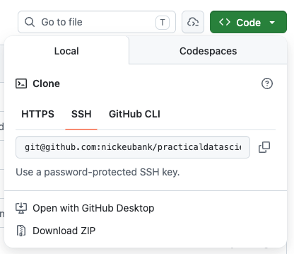
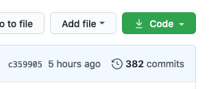

Git and Github, Part 1#
In these exercises, we’ll be practicing creating and contributing to projects using the “Github Flow” workflow you can find summarized here. Note this is not the only workflow out there – different companies or groups will often develop their own modification of this basic strategy – but most are pretty similar to this approach.
Part 0: Change your default editor!#
By default, when git needs you to label a commit, it will open an editor called vim that is very hard to work with (it’s not just weird – it’s even hard to get out of once it’s opened!)
So before you do anything else, first change your default editor. You can do this with the command:
git config --global core.editor "COMMANDTOLAUNCHYOUREDITOR"
If you have VS Code installed and the command line tool setup (i.e. you set up VS Code so that if you type code in the command line, VS Code opens, as discussed here), then I would do:
git config --global core.editor "code --wait"
NOTE: the way this command works is that if git has to open an editor to, say, ask you to review a commit message, it will open VS Code. Then it will wait until you close the window it has opened in VS Code (presumably after you’ve made the edits you want to make). So you do have to close the window it opens to advance.
If not, then the best option is probably to use nano, which is an in-terminal editor we’ve discussed before that’s much easier to use than vim, and which you should already have if you’re using a bash console:
git config --global core.editor "nano"
Part 1: Making a New Repo!#
To begin, we will create a repository where we will use data from the World Development Indicators to quickly plots GDP per capita against infant mortality.
To add a little authenticity to this experience, I’m going to give you some tasks for Computer A and some for Computer B. The idea is that, while you’re working at a team, you should treat your two laptops as if they belonged to two different colleagues who weren’t sitting next to one another.
Exercise 1#
On Computer A, go to Github.com and create a new repository “GDP_and_CO2” (using the github account of whoever owns Computer A).
When creating the repository, also make sure to add a README file (github will give you the option to do so).
Exercise 2#
Go to the Settings tab for your repository and add the github account of your partner (the owner of Computer B) as a collaborator. That will empower you to access and work with the data in the repository from either computer.
Exercise 3#
Let’s now download a copy of this repository onto Computer A using git clone. git clone will create a new folder on your computer in the current working directory of the terminal session where you run the git clone command.
To use git clone, you have to type git clone [a path to the repository on github] (e.g., git clone git@github.com:nickeubank/ds4humans.git). Note that this path is not just use the URL of your browser’s webpage! The URL you need for cloning should end in .git.
To get the correct path, click on the green Code button just above the list of files in your repository, then copy the provided text.

If you’ve set up an ssh key, then click the SSH tab and copy the link there (the link will be something like git@github.com:...).
If you have not, then use the HTTPS tab and you will be asked to enter your password to clone the repo.
Note: Cloning a repository on github is one of two ways of getting a repository setup on your computer. The other option is to make a folder on your computer, make it a git repo with the command git init, add some files and commit then, go to github, create an empty repository, add that repository’s URL to as the “remote” address in the repository on your computer using git remote add origin www.github.com/[path to your repo].git, then pushing. This is good to know in case you already have a repo with a lot of files on your computer. But if you’re starting a new, empty repo, it’s much easier to use git clone, since cloning also ensures that your repo knows the URL of the github repository it should connect to when doing git push and git pull.
Note: The folder you have now cloned is your git repository. Everything from the level of the folder you just cloned down is part of that repository, so don’t put anything into that folder you don’t want in the repository. And don’t put other repositories into that repository!
Exercise 4#
Now that you’ve cloned your repository, on Computer A edit the README.md file by adding some text about the project. Just open the file in whatever editor you usually use — RStudio, VS Code, whatever! It’s just a plaintext file.
Note you can edit your
README.mdfile any way you want! You can use Atom, nano, RStudio, VS Code, or any other editor. This is a critical thing to understand about git and github: it is a system for managing your files, not for managing your entire workflow. You still edit and run your code the way you always have. In this case,README.mdis just a text file on your computer you can work with like any other text file.
After making your edits and saving the file, let’s commit those changes. To do so, make sure your terminal is in your repository, then type git add ., hit enter, then git commit -m"im tweaking the readme" and enter. You’ve now committed your changes.
Now go to github in your web browser — can you see the edits you just made there?
Exercise 5#
No?! Right! Because we haven’t run git push! At it’s core, git takes all the different steps that a program like Dropbox does automatically when they sync and separates them into distinct steps. git add . and git commit added another block to the chain of changes that is your git history, but they didn’t push those changes up to github.
So now run git push, then go back to github in your web browser. Now can you see the changes?
Part 2: Clone and Edit on Computer B#
So far, everything we’ve done has been on one computer — where’s the fun in that?!
Exercise 6#
Clone the repository on Computer B. Again, pick a place where you want the repository folder to appear, navigate to it in your terminal, and run git clone .... The repo folder should appear, and inside that folder should be the README.md your colleague worked on!
Add some text to the file on Computer B, save it, run git add ., git commit -m"adding from computer b". That will commit your changes. Then run git push so they get reflected on github.
Go to github in your web browser. Can you see the changes?
Exercise 7#
Now let’s look at the files on Computer A. Can you see the changes you made on Computer B in the README.md file on Computer A?
No?? Hmmm…. What happened?
Exercise 8#
Just as changes you made on Computer A didn’t appear on github until you ran git push, changes on github won’t appear in your local files until you run git pull!
So in your repo, run git pull. Now what does the README look like? Can you see the changes from Computer B?
Part 3: Reviewing Changes#
A really nice feature of github is the ability to easy review changes you or your colleague has made. In your web browser, go to your repository. There, under the green Code button you used before you will see a clock and the word Commits. Click that button:

If you click on that button, you will see a history of all the commits that have occurred in this repository (you will not have 342 :)). Click on one of those commits, and you will see a report of what lines were removed (red) in that specific commit, and what lines were added.
This is an AMAZING tool for helping you to keep track of how things have evolved over time. And any time you want, you can roll back to one of those prior commits — either permanently or temporarily — if you need an older version of your paper/code/etc.